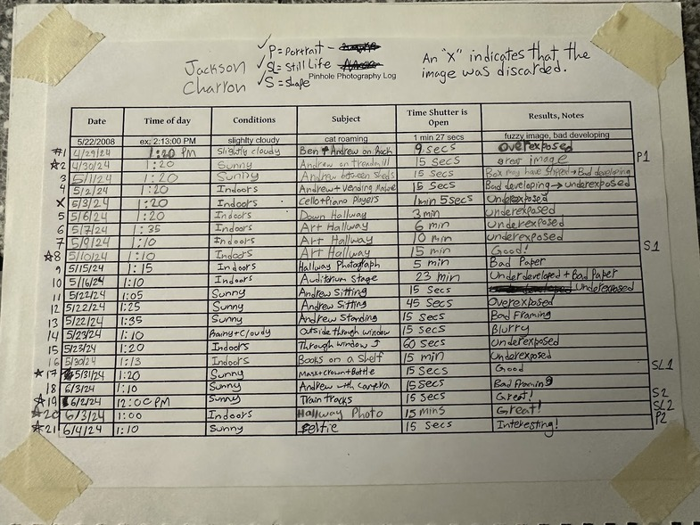

LTV Studios - 2022-2023/2024-Present Editor + General Assistant
Starting out in LTV's summer intern program before a quick promotion
to editor, I create short form content out of LTV productions
and edit interviews.
The East Hampton Star Newspaper - 2024 Digital Publishing Assistant
Working with the East Hampton Star, I digitized stories from the
weekly paper for their website and constructed two weekly
newsletters consisting of highlights from the paper.
Various Projects (Highlighted Below)
jackon
X
Programming Skills
Can Write + Interpret in:
- C++
- C#
- Java
- OpenGLSL
- Python
- Arduino
- Javascript
- HTML
- CSS
- Lua
- GDScript
- Luau
Proficient in:
- Git
- VS Code
- NGINX
- Docker
- Unity
- Godot
- Processing
- IntelliJ
- Arduino IDE
- Fabric
- Roblox Studio
- Forge
It's difficult to narrow my programming skills down into
a paragraph, but the essentials of what I want to convey
are that I am a highly versatile and adaptable individual.
I am an especially great asset in this field because I
learn quickly and I work with great passion and efficiency.
Video Editing Skills
Videography Skills
Photography Experience
My relationship with Photography
From a young age, my dad would take me out at sunrise for nature
photoshoots in the Hamptons. I quickly grew into my own passion for
photography, experimenting with both digital and analog mediums
as I developed my artistic persona. While I can at times take
a methodic approach to my projects, I often find myself taken
over by inspiration for a composition.

A logbook I kept when I was practicing pinhole photography (See results in the projects section!)
This portrait was exhibited in the Parrish Art Museum
Web Design Skills
Leadership Experience
President of Robotics Club 2024
As a member of the Robotics club for all four of my years in
highschool, I ran for president senior year to shape the club
in a way that my club members and I believe will be beneficial
for the new generation of robotics enthusiasts at our school.
Treasurer of Astronomy Club 2024
As one of Astronomy Club's founding members back in 2023, I
ran for treasurer my senior year to ensure that our club has
funding for our outings where we learn about and admire the
cosmos. As treasurer, I work closely with all club officers
to plan fundraising opportunities and realize our goals.